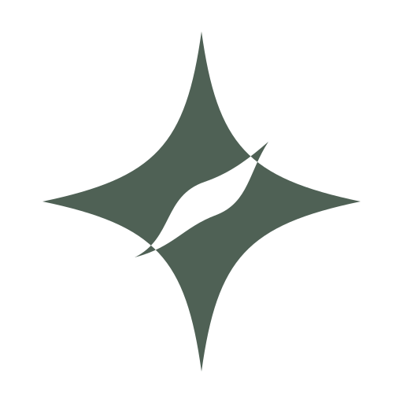
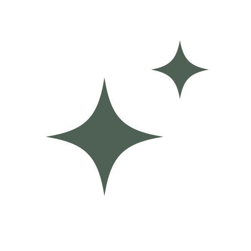
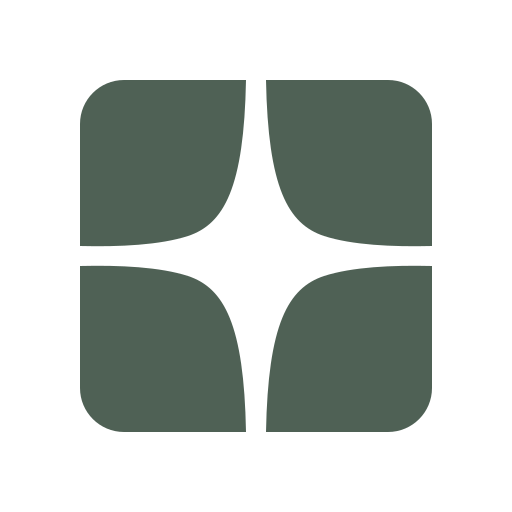

还要必要, 我这个是实验板, 因此呢? 颜色是 S 的吗? 看一下有没有一个黑色的呃没有差的曲色没有那么美, 那么方便在开始, 我是放在那个袋子马来西兰去看到这边这个哦, 跟这个样子角度要一样, 角度要一样, 我待会要给你有一个呃在家写一点, 这样写一点嫌一点, 然后这个扎的时候不要把一个扎在前面会有点刻, 但是这个影响没事, 这样可以的, 让它让它往里开, 你快写, 在网里穿一下就行, 可以的, 这边一个啊, 这边一个就好, 去打个楼下那个可以, 线下去吧。 这里的那个啥哈? 那啥? 那个啥那啥? 那个啥没有啥? 左键下没想钱叫什么? 你说那个一分二十四秒的跟十六秒的差别差别大吗? 我先发不起了。 我说了, 最后那边他运进没有那么感觉, 就开始偷懒了, 今天一遍怎么应该偷懒啊? 最后一遍。 其实我觉得大家最后一遍状态好一点。 你看是你觉得好看吗? 我看见确实很加分。 嗯, 但是他这这一次确实挺保守的, 整个都挺保守, 对他的风格来说的话, 灯光也挺好像的一个包。 嗯, 它只有别的工作吗? 那是马上, 我跟你说过摄影师他的爱好怎么收费? 他不怎么收费, 是因为他想跟我服务, 因为他倒出义务给别人拍呀26382e;font-family:Arial,'PingFang SC',sans-serif}header{max-width:1400px;margin:0 auto 38px}h1{font-weight:500;font-size:28px;letter-spacing:.1em}p{color:#69766d;font-size:14px;line-height:1.8}.grid{display:grid;grid-template-columns:repeat(3,1fr);gap:24px;max-width:1400px;margin:auto}article{background:#fff;padding:30px;border-radius:4px}.main{width:100%;height:280px;object-fit:contain}h2{font-size:18px;font-weight:500}.reverse{background:#263b30;padding:20px;text-align:center;margin:28px 0}.reverse img{width:90px;filter:brightness(0) invert(1)}.sizes{display:flex;align-items:center;gap:20px;height:70px}.label{font-size:11px;color:#6c796f;letter-spacing:.14em}a{color:inherit}@media(max-width:800px){body{padding:22px}.grid{grid-template-columns:1fr}.main{height:230px}}

01 / 星流
一颗星，藏入一道流动的留白。
SVG 原稿 ↗

02 / 双星
两颗星，通过尺度与距离形成联系。
SVG 原稿 ↗

03 / 星隙
几何形之间，一颗星从留白中出现。
SVG 原稿 ↗